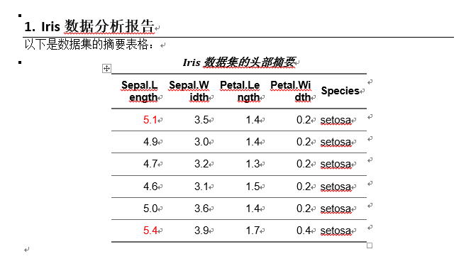

第16章 R 第16节 其它常用工具包
前言
一、conflicted
conflicted 是一个用于优化 R 语言中函数名冲突解决策略的包，由 Hadley Wickham 开发。它的核心理念是将隐性的冲突暴露为显性错误，强制开发者做出明确选择，从而避免因意外调用错误函数而引发的隐蔽 bug。
1.为什么要用 conflicted？
R 的默认冲突解决规则是“后来者居上”——当多个包导出了同名函数时，最后加载的包中的函数会覆盖前面的。这种规则的问题在于：
- 冲突难以察觉：你可能以为在调用
dplyr::filter()，实际上却在调用stats::filter()，代码运行结果错误但不会报错。 - 包更新可能引入新冲突：一个原本正常的包在更新后可能新增了与已加载包同名的函数，导致之前能运行的代码突然行为异常。
conflicted 将这种“静默覆盖”变为“主动报错”，迫使你明确指定要使用哪个函数。
2.安装与加载
# 从 CRAN 安装
install.packages("conflicted")
# 或使用 pak 从 GitHub 安装开发版
pak::pak("r-lib/conflicted")使用时只需加载该包，无需其他配置。建议将其加载在脚本的靠前位置：
library(conflicted)
library(dplyr) # 加载后若存在冲突，调用时会报错3.核心函数
3.1.conflicts_prefer()：声明全局偏好
这是最常用的函数，用于声明在某个函数名冲突时，你希望优先使用哪个包的版本。支持一次性声明多个偏好。
# 声明单个偏好：让 dplyr 的 filter 优先于所有其他包的 filter
conflicts_prefer(dplyr::filter)
# 一次性声明多个偏好
conflicts_prefer(
dplyr::filter,
dplyr::lag,
lubridate::week
)声明后，再次调用 filter() 时会自动使用 dplyr 版本，不再报错。
3.2.conflict_prefer()：旧版偏好声明
这是 conflicts_prefer() 的前身，仍然可用，但新版本建议优先使用后者，因为它更快、更简洁。旧版函数支持更细粒度的控制，例如指定“赢家”和“输家”。
# 让 dplyr::filter 胜过所有其他包
conflict_prefer("filter", "dplyr")
# 仅让 dplyr::filter 胜过 base 包
conflict_prefer("filter", "dplyr", "base")3.3.conflict_scout()：侦察所有冲突
在编写代码前，可以先运行此函数，查看当前已加载的包之间存在哪些函数名冲突。
conflict_scout()
#> 2 conflicts
#> • `filter()`: dplyr
#> • `lag()`: dplyr and stats输出中，被 [] 包围的函数表示已经通过偏好声明或内置规则解决了的冲突。
4.实际示例
假设你同时加载了 stats 和 dplyr，两者都有 filter() 函数：
library(conflicted)
library(stats)
library(dplyr)
# 直接调用 filter() 会报错
filter(mtcars, cyl == 8)
#> Error: [conflicted] `filter` found in 2 packages.
#> Either pick the one you want with `::`:
#> • dplyr::filter
#> • stats::filter
#> Or declare a preference with `conflicts_prefer()`:
#> • `conflicts_prefer(dplyr::filter)`
#> • `conflicts_prefer(stats::filter)`你有两种解决方式：
方式一：使用 :: 显式命名空间（适合临时使用）
dplyr::filter(mtcars, cyl == 8)方式二：声明全局偏好（适合脚本中反复使用）
conflicts_prefer(dplyr::filter)
filter(mtcars, cyl == 8) # 不再报错，自动使用 dplyr 版本5.工作原理
加载 conflicted 时，它会创建一个名为 “conflicted” 的环境，该环境被附加在全局环境之后。这个环境中为所有存在冲突的函数名创建了活跃绑定（active binding）——当你尝试调用一个冲突函数时，活跃绑定会立即抛出错误，并提示你如何消歧义。同时，该环境中的 library() 和 require() 函数被重写，以便在加载新包时自动更新冲突列表，而不会干扰冲突报告机制。
6.最佳实践
将偏好声明紧跟在对应的
library()调用之后，便于阅读和维护：library(dplyr) conflicts_prefer(dplyr::filter)在脚本开头先运行
conflict_scout()，了解当前环境中的冲突全貌，再针对性地声明偏好。不要将所有冲突都“一刀切”地声明偏好。对于不常用的冲突，保留报错机制反而更安全，能提醒你每次调用时都确认一下。
7.与其他方案的对比
conflicted 并非唯一的冲突管理方案。modules 和 import 包提供了更严格的控制：它们要求你对所有包函数都显式命名空间，虽然精度更高，但前期工作量也更大。conflicted 在便捷性和安全性之间取得了较好的平衡——只对冲突部分强制要求消歧义，其余函数照常使用。
二、fs 包
fs 包是一个旨在为 R 提供跨平台、统一且可预测的文件系统操作接口的工具包。它由 RStudio (现 Posit) 团队开发，是 tidyverse 生态的一部分，通过底层 libuv C 库（Node.js 的后端）实现了在各种操作系统上一致的文件操作行为。
1.核心优势：为什么用 fs 替代 base R？
与 base R 中风格各异的文件函数相比，fs 包解决了几个关键痛点，使文件操作代码更简洁、可靠：
- 向量化操作：所有
fs函数都支持向量化，可以一次性处理多个文件路径。而 base R 的函数（如file.copy）是“一致性向量化”的，行为不统一。 - 返回值可预测：
fs函数总是返回一个带有路径名称的字符向量、逻辑向量或命名整数，便于在管道 (|>) 中继续处理。Base R 函数则常常返回逻辑值或系统错误码，需要额外的判断和处理。 - 显式失败：如果操作失败，
fs函数会直接抛出错误。而 base R 函数通常只发出警告，容易被忽略，导致问题被掩盖。 - UTF-8 编码：
fs函数始终将输入路径转换为 UTF-8，并返回 UTF-8 编码的结果，确保了跨操作系统的编码一致性。 - 命名规范统一：所有函数采用
类型_动作的命名法（如file_copy、dir_create），比 base R 中path.expand()与normalizePath()混用的风格更易记忆。
此外，fs 总是返回整洁路径 (tidy paths)，即始终使用 / 作为分隔符，且没有多余的斜杠，在支持的终端中还会根据文件类型和权限显示颜色。
2.核心函数
fs 的函数按照操作对象分为四大类，以下是各分类下的代表性函数及其与 base R 的对应关系。
2.1.路径操作与构建：path_*
用于构建、分解、规范化和检查路径，这些操作是纯计算，不要求文件真实存在。
| 函数 | 作用 | 对应的 base R 方式 |
|---|---|---|
path(...) |
安全地拼接路径组件，是 file.path() 的替代品 |
file.path() |
path_abs() |
将路径转换为绝对路径 | normalizePath() |
path_rel() |
计算相对路径 | 无直接对应 |
path_dir() |
提取路径的目录部分 | dirname() |
path_file() |
提取路径的文件名部分 | basename() |
path_ext() |
提取文件扩展名 | tools::file_ext() |
path_ext_set() |
设置或修改文件扩展名 | 无直接对应 |
path_split() |
将路径拆分为组成部分的列表 | strsplit() |
path_join() |
将拆分后的路径重新组合 | do.call(file.path, ...) |
path_home() |
返回用户主目录路径 | path.expand("~") |
path_wd() |
返回当前工作目录 | getwd() |
使用示例：
# 构建路径（自动添加正确分隔符）
path("data", "raw", paste0("file", 1:3), ext = "csv")
# 返回: "data/raw/file1.csv" "data/raw/file2.csv" "data/raw/file3.csv"
# 提取和修改扩展名
p <- "report.v1.docx"
path_ext(p) # "docx"
path_ext_set(p, "pdf") # "report.v1.pdf"
path_ext_remove(p) # "report.v1"2.2.文件操作：file_*
用于创建、复制、移动、删除文件和查询文件信息。
| 函数 | 作用 | 对应的 base R 方式 |
|---|---|---|
file_create() |
创建空文件（不截断已存在文件） | file.create() |
file_copy() |
复制文件 | file.copy() |
file_move() |
移动/重命名文件 | file.rename() |
file_delete() |
删除文件 | unlink() |
file_exists() |
检查文件是否存在 | file.exists() |
file_info() |
获取文件元数据（大小、修改时间等） | file.info() |
file_chmod() |
修改文件权限 | Sys.chmod() |
file_temp() |
生成临时文件名 | tempfile() |
file_show() |
在系统中打开文件 | browseURL() |
使用示例：
# 创建、复制、删除文件
file_create("notes.txt")
file_copy("notes.txt", "notes_backup.txt", overwrite = TRUE)
file_exists("notes_backup.txt") # TRUE
file_delete(c("notes.txt", "notes_backup.txt"))2.3.目录操作：dir_*
用于创建、列出、复制、删除目录等。
| 函数 | 作用 | 对应的 base R 方式 |
|---|---|---|
dir_ls() |
列出目录内容（返回路径向量） | list.files() |
dir_create() |
创建目录（可递归创建，已存在不报错） | dir.create() |
dir_copy() |
递归复制目录 | 无直接对应 |
dir_delete() |
删除目录及其内容 | unlink(..., recursive = TRUE) |
dir_exists() |
检查目录是否存在 | dir.exists() |
dir_info() |
获取目录内所有文件的元数据 | 无直接对应 |
dir_tree() |
以树形结构打印目录内容 | 无直接对应（类似 tree 命令） |
dir_map() |
对目录内每个文件应用函数 | 无直接对应 |
使用示例：
# 创建目录结构
dir_create("analysis/figures")
# 列出目录内所有 R 文件
dir_ls("analysis", glob = "*.R")
# 递归复制整个目录
dir_copy("analysis", "analysis_backup")2.4.链接操作：link_*
用于创建和管理文件系统链接（符号链接和硬链接）。
| 函数 | 作用 |
|---|---|
link_create() |
创建链接（符号链接或硬链接） |
link_copy() |
复制链接 |
link_delete() |
删除链接 |
link_exists() |
检查链接是否存在 |
link_path() |
获取链接指向的目标路径 |
2.5.实用函数 dir_tree()
dir_tree() 是一个很有用的辅助函数，能以树形结构直观地展示目录内容，相当于在 R 中调用 tree 命令。
dir_tree("analysis", recurse = TRUE)输出示例：
analysis
├── figures
│ ├── plot1.png
│ └── plot2.png
└── data
└── raw.csv3.与 base R 的对照速查
下表汇总了常见操作在 fs 和 base R 中的写法差异，方便迁移代码时参考。
| 操作 | fs 写法 |
base R 写法 |
|---|---|---|
| 列出目录 | dir_ls("path") |
list.files("path") |
| 创建目录 | dir_create("path") |
dir.create("path") |
| 删除目录 | dir_delete("path") |
unlink("path", recursive = TRUE) |
| 复制文件 | file_copy("src", "dest") |
file.copy("src", "dest") |
| 创建文件 | file_create("path") |
file.create("path") |
| 删除文件 | file_delete("path") |
unlink("path") |
| 检查存在 | file_exists("path") |
file.exists("path") |
| 获取信息 | file_info("path") |
file.info("path") |
| 拼接路径 | path("a", "b") |
file.path("a", "b") |
| 绝对路径 | path_abs("path") |
normalizePath("path") |
| 临时文件 | file_temp() |
tempfile() |
4.最佳实践
- 在管道中使用：
fs的向量化返回值和统一的命名风格使其非常适合与|>或%>%管道结合使用。 - 优先使用
path()构建路径：避免手动用paste0()拼接路径，path()会自动处理分隔符和向量化。 - 利用
dir_ls()的glob参数：可以方便地按模式筛选文件，如dir_ls("data", glob = "*.csv")。 - 用
file_exists()/dir_exists()替代file.exists()：这些函数是向量化的，且在管道中表现更一致。
fs 包通过统一的接口和可预测的行为，显著降低了 R 中文件操作的认知负担和出错概率，是 tidyverse 风格工作流中处理文件系统的推荐方案。
三、officer 和 flextable包
officer 和 flextable 是一对在 R 中生成 Microsoft Word 和 PowerPoint 文档的黄金搭档。它们分工明确：officer 负责文档级操作（创建、读取、添加段落/图片/表格等），而 flextable 专注于表格的美化与格式化。两者结合，可以让你从 R 中生成高度定制化的办公文档。
1.officer：文档级操作的引擎
officer 包的核心能力是访问和操作 Word (.docx)、PowerPoint (.pptx) 以及 RTF 文档。它允许你在 R 中创建新文档或读取现有文档，并向其中添加或修改内容，而无需在系统中安装 Microsoft Office。
主要功能
- 文档创建与读取：
read_docx()可以创建一个空的 Word 文档对象，或读取一个现有的.docx文件作为起点。同样，read_pptx()用于 PowerPoint 文档。 - 内容添加：你可以向文档中添加段落文本、图片、表格，甚至插入分页符、脚注等。核心函数包括
body_add_par()（添加段落）、body_add_img()（添加图片）、body_add_table()（添加基础表格）等。 - 文档内容提取：
officer还能读取 Word 文档的内容并将其转换为结构化数据。docx_summary()函数可以将整个文档（包括段落和表格）提取到一个data.frame中，便于进行批量分析或内容审查。docx_comments()则可以提取文档中的评论。 - 幻灯片操作：对于 PowerPoint，
officer提供了在幻灯片上添加内容的功能，你可以将 R 生成的图表（如ggplot2图形）以 PNG 或 EMF 格式插入到幻灯片中。
2. flextable：表格美化的利器
flextable 包的目标是让 R 用户能够轻松创建用于报告和出版的精美表格。它提供了一套语法一致的函数，无论最终输出是 HTML、PDF、Word 还是 PowerPoint，你都可以用同样的方式定义和美化表格。
主要功能
- 灵活的表格创建：
flextable()函数可以将一个data.frame直接转换为一个可深度定制的表格对象。每个单元格都可以包含多段具有独立格式（如加粗、变色）的文本。 - 链式格式化：这是
flextable最优雅的设计。你可以像使用dplyr的管道操作一样，通过一系列动词（如bold(),color(),bg()）层层叠加格式，代码清晰易读。r library(flextable) flextable(head(mtcars)) |> highlight(i = ~ mpg < 22, j = "disp", color = "#ffe842") |> bg(j = c("hp", "drat", "wt"), bg = "lightblue") |> add_footer_lines("The 'mtcars' dataset") - 丰富的定制能力：你可以合并单元格、设置多行表头、定义页眉页脚、控制边框样式、设置数字格式等。它还提供了
as_flextable()函数，能直接将多种 R 模型对象（如lm,gam）转换为美观的汇总表格。 - 内置主题：
flextable提供了一系列内置主题，如theme_vanilla(),theme_box(),theme_zebra()，只需一行代码即可为表格应用一套预设的配色和边框风格。
3.协同工作流：从数据到文档
officer 和 flextable 的协同工作流程非常直观：用 flextable 在 R 中“精装修”好表格，然后用 officer 将其“搬运”到 Word 或 PowerPoint 文档中。
flextable 包在设计之初就考虑到了与 officer 的集成，提供了专门的桥接函数，如 body_add_flextable()（用于 Word）和 ph_with.flextable()（用于 PowerPoint）。
4.核心工作流示例
下面是一个完整的示例，展示如何创建一个包含格式化和美化表格的 Word 文档。
library(officer)
library(flextable)
# 1. 使用 flextable 创建一个格式化的表格对象
my_table <- flextable(head(iris)) |>
theme_vanilla() |> # 应用内置主题
bold(part = "header") |> # 加粗表头
color(i = ~ Sepal.Length > 5, color = "red", j = "Sepal.Length") |> # 条件着色
set_caption("Iris 数据集的头部摘要") # 添加题注
# 2. 使用 officer 创建一个新的 Word 文档对象
doc <- read_docx()
# 3. 向文档中添加标题段落和 flextable 表格
doc <- body_add_par(doc, value = "Iris 数据分析报告", style = "heading 1")
doc <- body_add_par(doc, value = "以下是数据集的摘要表格：")
doc <- body_add_flextable(doc, value = my_table) # 核心桥接函数
# 4. 保存文档到文件
print(doc, target = "iris_report.docx")
5.最佳实践与注意事项
- 明确分工：记住
officer管文档结构，flextable管表格外观。不要在officer中尝试做复杂的表格美化，也不要用flextable去处理文档的页面布局。 - 使用
officedown增强 R Markdown：如果你在 R Markdown 或 Quarto 中工作，officedown包可以让你在 Markdown 文档中直接使用officer和flextable的全部功能，实现更流畅的自动化报告生成。 - 利用模板：
officer允许你读取一个预先设计好样式的 Word 或 PowerPoint 文件作为模板（read_docx("template.docx")），这样生成的新文档会自动继承模板中的样式（字体、颜色、页眉页脚等），非常适合企业报告场景。 - 注意主题应用顺序：在使用
flextable的主题函数（如theme_zebra()）时，务必在所有其他格式化操作之后再调用它，因为主题会应用到调用时已存在的所有表格元素上。
总的来说，officer 和 flextable 的组合为 R 用户提供了一个强大、灵活且完全可编程的 Office 文档生成方案，特别适合需要批量生成格式统一、内容动态的数据报告场景。
四、mailR 包
mailR 是一个在 R 中发送电子邮件的工具包，它通过封装 Apache Commons Email 库，提供了强大而灵活的邮件发送功能。其核心优势在于，当你需要自动化、批量化地发送邮件时（例如，在数据分析流程结束后自动将报告发送给同事），mailR 能让你直接在 R 脚本中完成所有操作，无需离开 R 环境。
1.核心功能
mailR 的功能设计覆盖了从简单通知到复杂 HTML 邮件的多种场景：
- SMTP 认证与加密：支持需要身份验证的 SMTP 服务器，并兼容 SSL/TLS 加密，确保邮件发送的安全。
- 丰富的收件人管理：可以同时向多个收件人发送邮件，并支持抄送 (Cc)、密送 (Bcc) 和回复地址 (ReplyTo) 的设置。
- 灵活的附件支持：能够附加来自本地文件系统的多个文件，也支持从有效的 URL（如 Dropbox 链接）直接附加文件。
- HTML 邮件与内联图片：可以发送 HTML 格式的邮件，并且支持将图片作为内联资源嵌入到 HTML 正文中，让邮件内容更加丰富和专业。
2.安装与依赖
mailR 依赖于 Java 环境，这是使用前需要特别注意的一点。
# 从 CRAN 安装稳定版
install.packages("mailR")
# 或从 GitHub 安装开发版
# install.packages("devtools")
# devtools::install_github("rpremrajGit/mailR")
library(mailR)重要提示：由于 mailR 通过 rJava 包与 Java 交互，你的系统必须安装 Java，并且 R 能够找到它。如果安装或加载 mailR 时遇到问题，通常与 Java 环境配置有关。
3.基本用法：send.mail() 函数
send.mail() 是 mailR 的核心函数，其参数设计直观，涵盖了发送邮件所需的所有信息。
核心参数速查
| 参数 | 说明 | 是否必需 |
|---|---|---|
from |
发件人邮箱地址（仅限单个地址） | 是 |
to |
收件人邮箱地址的字符向量 | 是 |
subject |
邮件主题 | 否 |
body |
邮件正文文本。若指向一个文件路径，则会读取文件内容作为正文 | 否 |
smtp |
包含 SMTP 服务器配置的列表（如 host.name, port 等） |
是 |
authenticate |
逻辑值，指示 SMTP 服务器是否需要认证 | 否 |
attach.files |
要附加的文件的路径或 URL 的字符向量 | 否 |
html |
逻辑值，指示 body 是否应解析为 HTML |
否 |
send |
逻辑值，默认为 TRUE。设为 FALSE 则返回邮件对象而不发送 |
否 |
基础示例：发送一封纯文本邮件
这是一个通过需要认证的 SMTP 服务器（以 Gmail 为例）发送邮件的标准流程。
library(mailR)
send.mail(
from = "your_email@gmail.com",
to = c("recipient1@example.com", "Recipient 2 <recipient2@example.com>"),
subject = "来自 R 的测试邮件",
body = "这是一封通过 mailR 包发送的测试邮件。",
smtp = list(
host.name = "smtp.gmail.com",
port = 465,
user.name = "your_email@gmail.com",
passwd = "your_password", # 建议使用环境变量或密钥管理工具
ssl = TRUE
),
authenticate = TRUE,
send = TRUE
)注意：如果使用 Gmail，可能需要生成专用的“应用密码”，而非直接使用账户登录密码。将密码等敏感信息直接写在脚本中存在安全风险，建议通过
Sys.getenv()从环境变量中读取。
4.进阶用法
4.1. 发送 HTML 格式邮件
通过设置 html = TRUE，你可以在 body 中编写 HTML 代码，创建格式丰富的邮件内容。
send.mail(
from = "sender@example.com",
to = "recipient@example.com",
subject = "HTML 邮件示例",
body = '<h1>周报摘要</h1><p style="color:blue;">本周数据指标已更新，请查看附件。</p>',
html = TRUE,
smtp = list(host.name = "smtp.example.com", port = 587,
user.name = "user", passwd = "pass", tls = TRUE),
authenticate = TRUE,
send = TRUE
)4.2. 添加附件
attach.files 参数接受一个字符向量，可以一次性附加多个文件。请注意，它期望的是文件路径，而不是文件夹路径。
# 假设要附加当前目录下的两个文件
send.mail(
# ... 其他参数 ...
attach.files = c("report.pdf", "data.xlsx"),
# ...
)如果需要附加某个文件夹下的所有文件，可以先使用 list.files() 获取文件路径列表：
attach.files = list.files("path/to/folder", full.names = TRUE)4.3. 批量发送个性化邮件
结合 apply 函数或循环，可以轻松实现向不同收件人发送带有不同内容的邮件，这对于发送个性化通知非常有用。
recipients <- data.frame(
email = c("alice@example.com", "bob@example.com"),
name = c("Alice", "Bob")
)
for (i in 1:nrow(recipients)) {
send.mail(
from = "sender@example.com",
to = recipients$email[i],
subject = paste("你好，", recipients$name[i]),
body = paste("亲爱的", recipients$name[i], "，这是一封个性化邮件。"),
smtp = list(host.name = "smtp.example.com", port = 465,
user.name = "user", passwd = "pass", ssl = TRUE),
authenticate = TRUE,
send = TRUE
)
}5.常见问题与注意事项
- Java 环境问题：这是
mailR最常见的障碍。如果加载失败，请检查rJava是否正常工作，并确保 Java 的路径已正确配置。 - R 版本要求：
mailR可能需要较新版本的 R（例如 4.0.5 或更高），旧版本 R 可能无法使用。 - 参数类型错误：
from参数必须是长度为 1 的字符向量。如果传递了一个数据框列或长度大于 1 的向量，会报错。确保使用as.character()进行转换。 - 认证失败：如果使用 Gmail 等公共邮箱，请确认已开启 SMTP 服务，并考虑使用“应用专用密码”。对于企业邮箱，请核对服务器地址、端口和加密方式（SSL/TLS）。
- 调试信息：在
send.mail()中设置debug = TRUE，可以在控制台看到详细的日志信息，有助于排查发送失败的原因。
6.总结
mailR 为 R 用户提供了一个功能完备的邮件发送解决方案，特别适合将邮件通知集成到自动化数据流程中。其核心在于通过 smtp 列表正确配置服务器参数。虽然 Java 依赖带来了一些配置门槛，但一旦环境就绪，它就能成为你自动化工作流中可靠的一环。